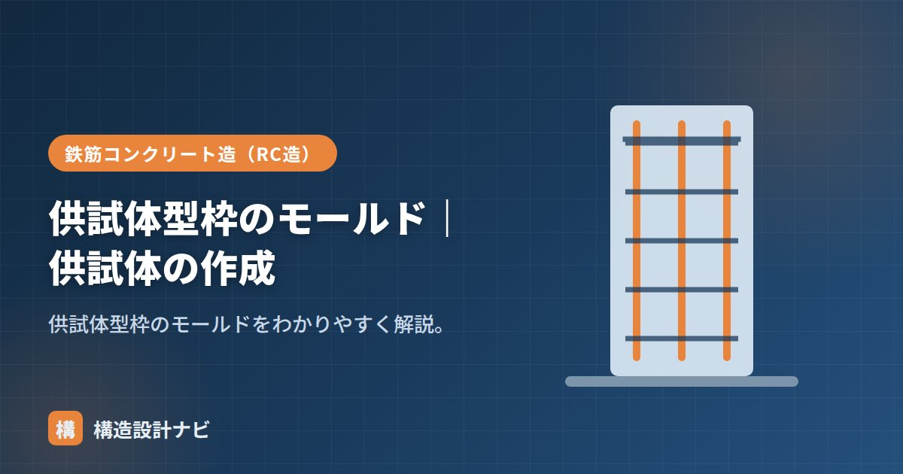

供試体型枠のモールド｜供試体の作成

モールドとは、コンクリートの圧縮強度試験用供試体（円柱）を作るための型枠（容器）のことです。これにフレッシュコンクリートを詰めて成形し、硬化後に脱型してテストピースとします。試験結果の信頼性は、モールドの精度や供試体の作り方に大きく左右されるため、現場では作成手順の一つひとつが重要な意味を持ちます。
この記事の要点
- モールドはφ100×200mmなどの円筒形の型枠で、材質は樹脂製・金属製がある。
- 詰め方・突き回数・仕上げ・脱型・養生の手順を守らないと正確な強度が出ない。
- 試験前の断面仕上げ（キャッピング等）も強度試験の精度に影響する。
モールドとは
モールドは、φ100×200mmなどの円筒形の型枠です。内面に薄く油（はく離剤）を塗って使い、脱型時にコンクリートが型に張り付かないようにします。名前は英語のmold（型・鋳型）に由来します。
モールドの種類
| 材質 | 特徴 |
|---|---|
| プラスチック製 | 軽量で扱いやすく、多くは使い捨て。現場で最も多く使われる |
| 金属製（鋼製） | 剛性が高く精度が出やすい。繰り返し使用でき、精密な試験に向く |
| 紙製 | 安価で軽量だが、変形しやすいため取り扱いに注意が必要 |
いずれもJISで定められた寸法精度・剛性の基準を満たすことが求められます。材質を問わず、内面に傷や変形があると供試体の形状が乱れ、試験結果に影響するため、使用前の点検が欠かせません。
供試体の作成手順
- 採取したコンクリートをモールドに2〜3層に分けて詰める。
- 各層を突き棒で所定回数突く、または振動機で締め固め、空気を抜く。
- 上面を平らに仕上げる。
- 所定時間後に脱型し、目的に応じた養生（標準水中養生など）を行う。
- 材齢（標準は28日）で圧縮強度試験にかける。
POINT
供試体の作り方はJIS（A 1132 など）で定められています。詰め方・突き回数・養生を正しく行わないと、正確な強度が得られません。試験面は平滑に仕上げ（必要ならキャッピング）ます。
よくある失敗と注意点
- 締固め不足：突き棒の回数や振動時間が不足すると、内部に空隙（ジャンカ）が残り、強度が実際より低く出る。
- 上面の仕上げ不良：上面が凹凸のまま硬化すると、圧縮試験時に力が均等にかからず、正確な強度が測れない。
- 養生条件の不徹底：脱型後の養生温度・水分管理を怠ると、構造体の実強度とかけ離れた値になりやすい。
- 脱型のタイミング：早すぎる脱型は角欠けや変形の原因になる。所定時間を守ることが大切。
よくある質問
Q1. モールドは何回まで再使用できますか？
金属製モールドは変形や内面の傷がない限り繰り返し使用できますが、寸法精度や真円度が基準を満たさなくなったものは使用を中止します。プラスチック製・紙製は基本的に使い捨てです。
Q2. なぜ2〜3層に分けて詰めるのですか？
一度に深く詰めると、下層まで十分に締め固められず空隙が残りやすくなるためです。層ごとに突き固めることで、供試体全体を均一な密度に仕上げられます。
実務のワンポイント
配筋検査のついでに生コン受入検査へ立ち会うと、突き棒の突き忘れや上面仕上げの雑さが目につくことがある。数値が出るのは28日後なので、その場で締固め不足に気づけるかどうかが後々の強度不足を防ぐ分かれ目になる。
まとめ
- モールドは圧縮強度試験用の供試体（円柱）を作る型枠。φ100×200mmなど。
- 材質はプラスチック製・金属製・紙製があり、精度と耐久性が異なる。
- 2〜3層に詰めて突き固め、仕上げ・脱型・養生して作る。
- 締固め不足や仕上げ不良は、正確な強度が得られない原因になる。